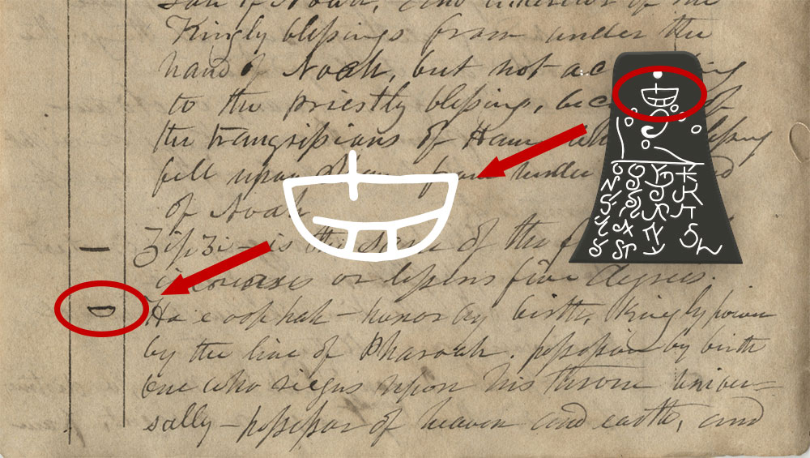

Well like with many things in history context is everything. Don't let stand alone claims take you for a spin when you dont have the full story! In this section we are going to provide some important pieces of information about the story up until this point as well as lay out the most commonly supported explaination given by church historians about the Kinderhook plates.
First off lets address the quote from Joseph about the lineage of the author of the plates. The quote is written in the first person as if Joseph himself wrote it. This is actially somewhat decieving because the book it was taken from was published many years after Josephs death.
In reality that quote was origionally written by William Clayton who was Josephs private clerk at the time and reads as such: "Prest. J. has translated a portion and says they contain the history of the person with whom they were found and he was a descendant of ham through the loins of Pharaoh king of Egypt, and that he received his kingdom from the ruler of heaven and earth.”
He publishes this written in the first person in the History of the Church in order to perserve the biographical nature of the book which was actually a fairly common practice at the time.
Ok cool, that somewhat explains the nature of the quote, but that doesnt explain exactually what did Joseph Smith do with those plates? Well to understand that we are going to have to dive into one of Josephs failed projects as a Translor. That being the GAEL (Grammer and Aplhebet of the Egyptian Language).
During the time when the egyption papyri was making its way through kirtland the prophet attemped to perform a secular translation of the egyptian alphabet, this wasnt an inpsired effort and was on of the many examples of Joseph simply hitting the books and trying to figure this out on his own.
After egyptology became more sophisticated the conclusion was made that Josephs interpration was simply not correct. However, it plays an important role in the controversy regarding the Kinderhook plates.
As seen in the photo above at least on of the characters in the GEAL roughly matches a character found on the Kinderhook plates. Lets do a quick comparison of what the GEAL says vs what Joseph supposed tranlation of the plates says.
The GEAL stated that this symbol represents "Honor by birth, kingly power by the line of Pharaoh. possession by birth one who reigns upon his throne universally—possessor of heaven and earth."
Joseph's interpreation states: “I have translated a portion of them, and find they contain the history of the person with whom they were found. He was a descendant of Ham, through the loins of Pharaoh, king of Egypt, and that he received his kingdom from the ruler of heaven and earth."
William Clayton's account of what Josephs translation stated conforms almost perfectly with statements found withing the GEAL. On top of this a non-member news reporter from the New York Herald was quoted saying that Joseph had compared the plates to his egyptian alphabet in his presence. These two pieces of evidence together provide a strong argument in favor of Joseph.